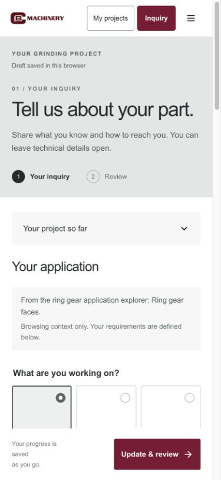

01 / DISCOVERY
Find expertise for your part.
Enter through an application, a process or a specific engineering question.
Before
Existing product and application content.
After
A clearer entry point for each manufacturing need.
- SEO + AI discovery
- Application pages
- Mobile entry

Presenter notes
The three-scene story
Find:Start with the customer’s part, process or engineering question. The original site already has equipment and application information; this demo reorganizes it into clearer entry points. SEO and AI search visibility are improvement areas to validate after launch with actual indexing, traffic and inquiry data. A local demo does not establish ranking or AI citation results.
Understand:Pause on the C&B logo on the equipment. Establish the brand before showing whole-machine exploration, component drill-down and the ring gear’s two faces. Internal layouts and process geometry remain schematic and require C&B engineering confirmation.
Move forward:Follow Fill → Review → My projects → Quotation. Review the details after entry and preserve the same brief after submission. C&B receives that same information for internal review, approval and sharing. Returning customers can continue drafts and view inquiries and shared quotations. C&B’s existing internal quotation and approval process has not been verified.
Branding harness
Organize approved brand rules, engineering facts, assets and reviewed content so one real equipment story can extend into web pages, social posts, video and sales materials. This is a proposed ongoing pilot. Existing rules and assets do not mean an automated generation, review and publishing platform is live.
Mobile touchpoints
Entering an application page from search or social, exploring equipment by touch, submitting details and returning to a quotation belong to one journey. The phone images show actual demo touchpoints. Production delivery still requires testing touch interaction, attachments and document reading on physical devices.
Demo boundaries and references
This is a browser-local demo. Project data stays in the current browser; live email, CRM and account authentication are not connected. Example customers, projects and quotations do not represent real transactions.
The visual organization draws on Tulip’s homepage for its main scene, current step and on-demand detail, and the Luxury Goods page for the distinct roles of scene illustrations, structural diagrams and product screenshots. Brand colors and assets follow the C&B direction.